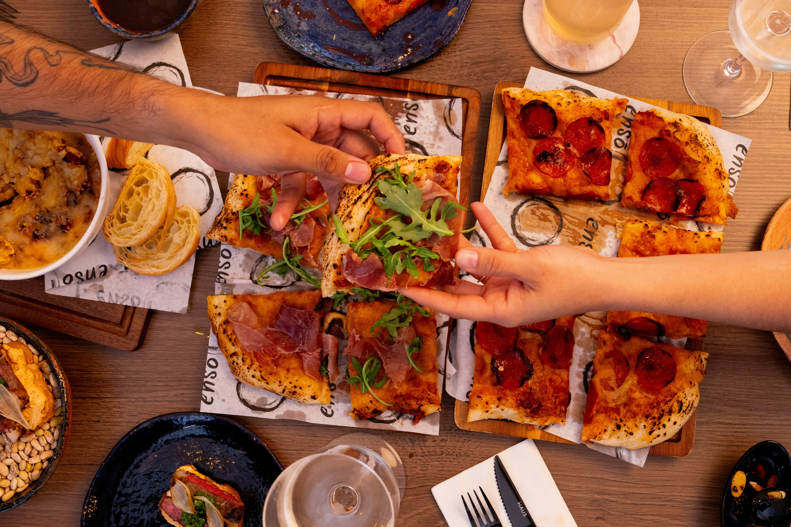
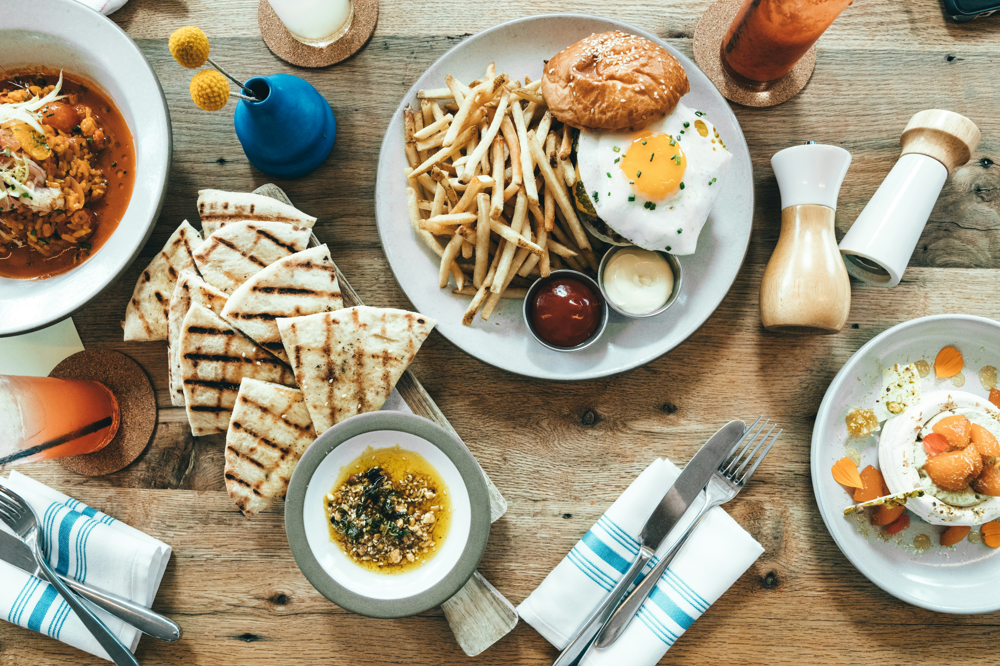
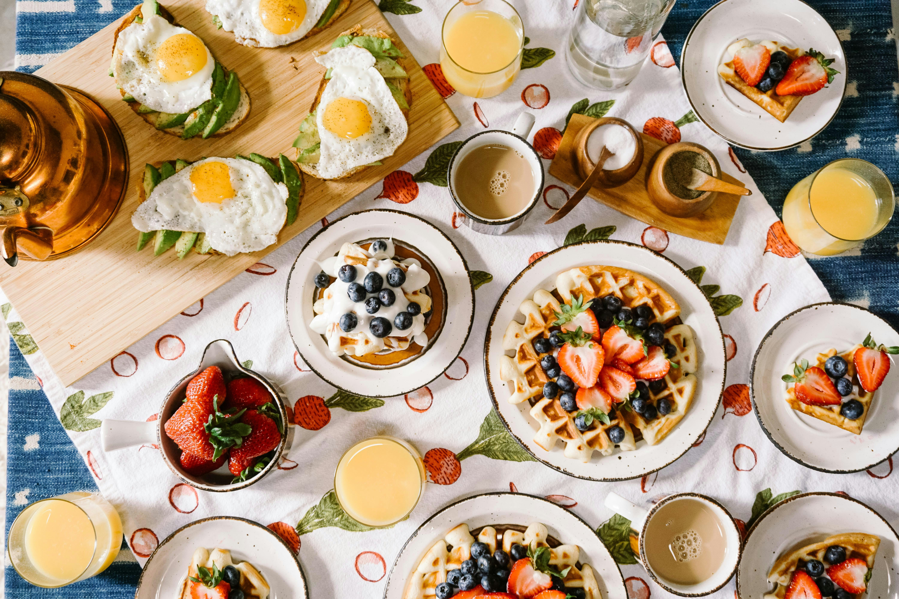

Ten Restaurants
Taniti has 10 restaurants offering a selection of local specialties and familiar international dishes.
Taste island-grown ingredients, fresh seafood, and familiar favorites across Taniti. From lively restaurant districts to neighborhood groceries, dining is easy to fit into every itinerary.

Taniti has 10 restaurants offering a selection of local specialties and familiar international dishes.
Five restaurants serve Tanitian cuisine, with local fish and rice featured prominently on the menu.
Three restaurants serve American-style meals for travelers looking for burgers, sandwiches, and other familiar choices.
Two restaurants specialize in Pan-Asian cuisine, offering another flavorful option for lunch or dinner.
Stock up on groceries at two supermarkets for breakfasts, picnic supplies, and longer stays.
Two smaller grocery stores provide extra convenience, and one 24-hour convenience store is available for late arrivals and essentials.

Taniti's local cuisine focuses on the island's abundant seafood and simple, satisfying ingredients. Fish and rice are especially popular and provide a delicious introduction to everyday island dining.
For a relaxed meal, choose a beachside table or one of the restaurants serving traditional dishes. Ask what came in fresh that day and try a rotating selection of local specialties.
Look for a meal featuring the island's best-known ingredients.
Fresh local fish prepared with rice
Island vegetables and regional side dishes
Pan-Asian and American favorites for every craving
Two supermarkets make it easy to prepare meals and find familiar groceries. Two smaller grocery stores also offer convenient options close to local neighborhoods.
For snacks, drinks, or an emergency item after hours, the island's 24-hour convenience store is available whenever you need it.
Choose the right dining experience for every part of your trip.
Visit a supermarket for a self-catering breakfast or beach picnic
Reserve time for one local fish-and-rice restaurant
Keep a 24-hour convenience store in mind for late-night essentials
